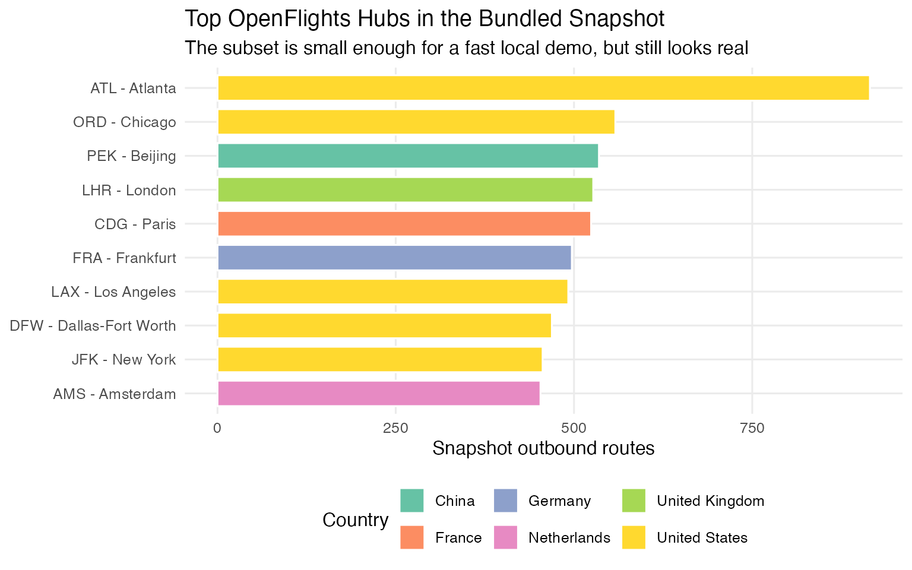
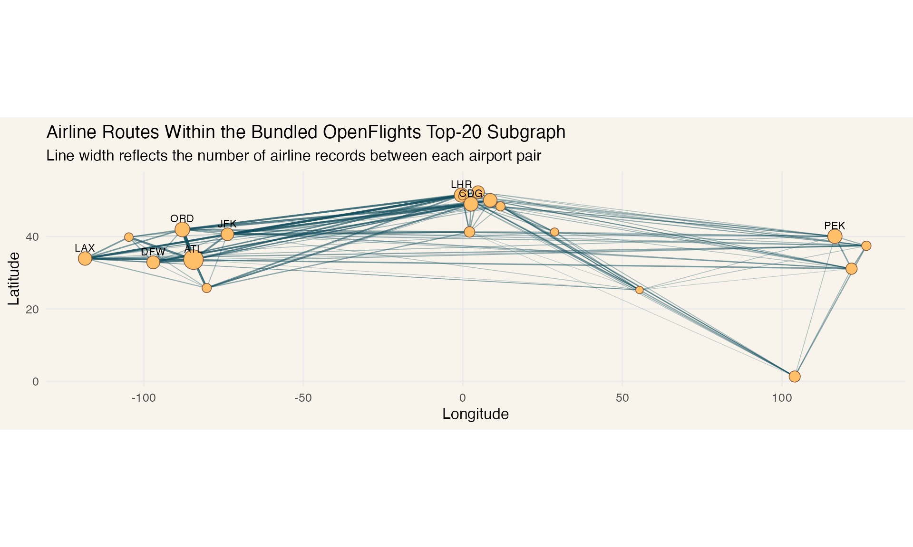

OpenFlights Analysis with grafeoR
Source:vignettes/openflights-analysis.Rmd
openflights-analysis.RmdThe package ships with a compact real-world OpenFlights subset so you can test the Rust binding against graph data that looks like an actual transport network, not just toy nodes and edges.
The bundled sample contains:
- the 20 airports with the highest outbound route counts in the upstream OpenFlights snapshot
- the 1,129 airline route records whose source and destination are both inside that 20-airport subset
sample <- openflights_sample_data()
dim(sample$airports)
#> [1] 20 7
dim(sample$routes)
#> [1] 1129 5
head(sample$airports[, c("iata", "city", "country", "snapshot_outbound_routes")])
#> iata city country snapshot_outbound_routes
#> 1 ATL Atlanta United States 915
#> 2 ORD Chicago United States 558
#> 3 PEK Beijing China 535
#> 4 LHR London United Kingdom 527
#> 5 CDG Paris France 524
#> 6 FRA Frankfurt Germany 497
head(sample$routes)
#> airline source_iata dest_iata stops equipment
#> 1 DL AMS ATL 0 333 76W
#> 2 KL AMS ATL 0 777
#> 3 HV AMS BCN 0 73H 73W
#> 4 IB AMS BCN 0 320
#> 5 KL AMS BCN 0 737
#> 6 MU AMS BCN 0 737Load the graph into Grafeo
gql_string <- function(x) {
if (is.null(x) || is.na(x)) {
return("NULL")
}
value <- gsub("\\\\", "\\\\\\\\", as.character(x), perl = TRUE)
value <- gsub("\"", "\\\\\"", value, fixed = TRUE)
paste0("\"", value, "\"")
}
load_openflights_graph <- function(db, sample) {
tx <- db$begin()
on.exit(
if (tx$is_active()) {
try(tx$rollback(), silent = TRUE)
},
add = TRUE
)
for (i in seq_len(nrow(sample$airports))) {
row <- sample$airports[i, ]
tx$execute(sprintf(
paste0(
"INSERT (:Airport {",
"iata: %s, name: %s, city: %s, country: %s, ",
"lat: %.6f, lng: %.6f, snapshot_outbound_routes: %d",
"})"
),
gql_string(row$iata),
gql_string(row$name),
gql_string(row$city),
gql_string(row$country),
row$latitude,
row$longitude,
as.integer(row$snapshot_outbound_routes)
))
}
for (i in seq_len(nrow(sample$routes))) {
row <- sample$routes[i, ]
tx$execute(sprintf(
paste0(
"MATCH (src:Airport {iata: %s}), (dst:Airport {iata: %s}) ",
"INSERT (src)-[:ROUTE {airline: %s, stops: %d, equipment: %s}]->(dst)"
),
gql_string(row$source_iata),
gql_string(row$dest_iata),
gql_string(row$airline),
as.integer(row$stops),
gql_string(row$equipment)
))
}
tx$commit()
invisible(db)
}
db <- grafeo_db()
load_openflights_graph(db, sample)
db$info()
#> $graph_model
#> [1] "LPG"
#>
#> $node_count
#> [1] 20
#>
#> $edge_count
#> [1] 1129
#>
#> $is_persistent
#> [1] FALSE
#>
#> $path
#> NULL
#>
#> $wal_enabled
#> [1] FALSE
#>
#> $version
#> [1] "0.5.23"
#>
#> $current_graph
#> NULLQuery airport and route data back into R
For the charts below, grafeoR is used to pull nodes and
edges back into R as data frames, and the aggregation for plotting is
handled on the R side.
airports_tbl <- db$query(
paste(
"MATCH (a:Airport)",
"RETURN a.iata, a.name, a.city, a.country, a.lat, a.lng,",
"a.snapshot_outbound_routes",
"ORDER BY a.snapshot_outbound_routes DESC, a.iata"
)
)
routes_tbl <- db$query(
paste(
"MATCH (src:Airport)-[r:ROUTE]->(dst:Airport)",
"RETURN src.iata, src.lat, src.lng, dst.iata, dst.lat, dst.lng, r.airline"
)
)
route_segments <- aggregate(
routes_tbl$r.airline,
by = list(
source_iata = routes_tbl$src.iata,
source_lat = routes_tbl$src.lat,
source_lng = routes_tbl$src.lng,
dest_iata = routes_tbl$dst.iata,
dest_lat = routes_tbl$dst.lat,
dest_lng = routes_tbl$dst.lng
),
FUN = length
)
names(route_segments)[names(route_segments) == "x"] <- "airline_count"
route_segments <- route_segments[
order(
-route_segments$airline_count,
route_segments$source_iata,
route_segments$dest_iata
),
,
]
head(airports_tbl[, c("a.iata", "a.city", "a.country", "a.snapshot_outbound_routes")])
#> a.iata a.city a.country a.snapshot_outbound_routes
#> 1 ATL Atlanta United States 915
#> 2 ORD Chicago United States 558
#> 3 PEK Beijing China 535
#> 4 LHR London United Kingdom 527
#> 5 CDG Paris France 524
#> 6 FRA Frankfurt Germany 497
head(route_segments)
#> source_iata source_lat source_lng dest_iata dest_lat dest_lng
#> 55 ORD 41.9786 -87.904800 ATL 33.6367 -84.428101
#> 40 ATL 33.6367 -84.428101 ORD 41.9786 -87.904800
#> 69 ATL 33.6367 -84.428101 MIA 25.7932 -80.290604
#> 98 JFK 40.6398 -73.778900 LHR 51.4706 -0.461941
#> 81 LHR 51.4706 -0.461941 JFK 40.6398 -73.778900
#> 56 MIA 25.7932 -80.290604 ATL 33.6367 -84.428101
#> airline_count
#> 55 20
#> 40 19
#> 69 12
#> 98 12
#> 81 12
#> 56 12Visualize the hubs
top_hubs <- airports_tbl[seq_len(min(10L, nrow(airports_tbl))), , drop = FALSE]
top_hubs$airport <- factor(
paste(top_hubs$a.iata, top_hubs$a.city, sep = " - "),
levels = rev(paste(top_hubs$a.iata, top_hubs$a.city, sep = " - "))
)
ggplot(
top_hubs,
aes(
x = airport,
y = a.snapshot_outbound_routes,
fill = a.country
)
) +
geom_col(width = 0.75, color = "white") +
coord_flip() +
scale_fill_brewer(palette = "Set2") +
labs(
title = "Top OpenFlights Hubs in the Bundled Snapshot",
subtitle = "The subset is small enough for a fast local demo, but still looks real",
x = NULL,
y = "Snapshot outbound routes",
fill = "Country"
) +
theme_minimal(base_size = 12) +
theme(
panel.grid.minor = element_blank(),
legend.position = "bottom"
)
Visualize the route network
labels <- airports_tbl[seq_len(min(10L, nrow(airports_tbl))), , drop = FALSE]
ggplot() +
geom_segment(
data = route_segments,
aes(
x = source_lng,
y = source_lat,
xend = dest_lng,
yend = dest_lat,
linewidth = airline_count,
alpha = airline_count
),
color = "#0f4c5c",
lineend = "round"
) +
geom_point(
data = airports_tbl,
aes(
x = a.lng,
y = a.lat,
size = a.snapshot_outbound_routes
),
shape = 21,
fill = "#ffbf69",
color = "#7f5539",
stroke = 0.4
) +
geom_text(
data = labels,
aes(
x = a.lng,
y = a.lat,
label = a.iata
),
size = 3,
nudge_y = 3,
check_overlap = TRUE
) +
coord_quickmap() +
scale_linewidth(range = c(0.2, 1.3), guide = "none") +
scale_alpha(range = c(0.15, 0.7), guide = "none") +
scale_size(range = c(2.5, 7), guide = "none") +
labs(
title = "Airline Routes Within the Bundled OpenFlights Top-20 Subgraph",
subtitle = "Line width reflects the number of airline records between each airport pair",
x = "Longitude",
y = "Latitude"
) +
theme_minimal(base_size = 12) +
theme(
panel.grid.minor = element_blank(),
plot.background = element_rect(fill = "#f8f4ec", color = NA),
panel.background = element_rect(fill = "#f8f4ec", color = NA)
)
The bundled sample is documented in
inst/extdata/openflights-README.md, including the upstream
source URLs and license attribution to OpenFlights.